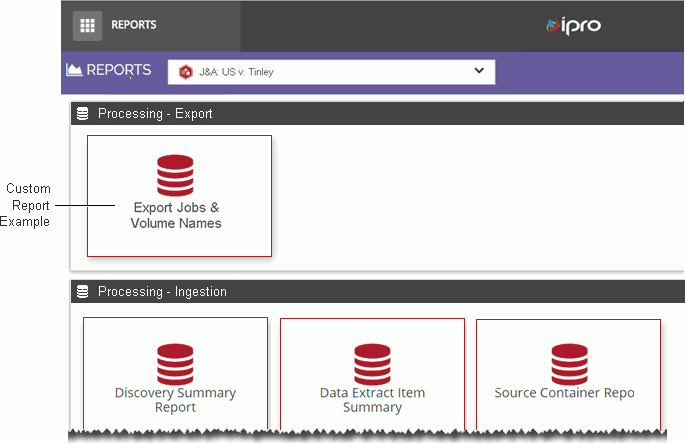

As of version 2018.5.0, security was implemented in
Administrators with a strong SQL background can use
stored procedures to create custom reports for inclusion in the
The following figure shows a custom report that has
been included in

Creating custom reports can be as simple as creating
a stored procedure that returns the data for a report (see
|
|
Note
the following when creating a custom report for
|
Related Topics